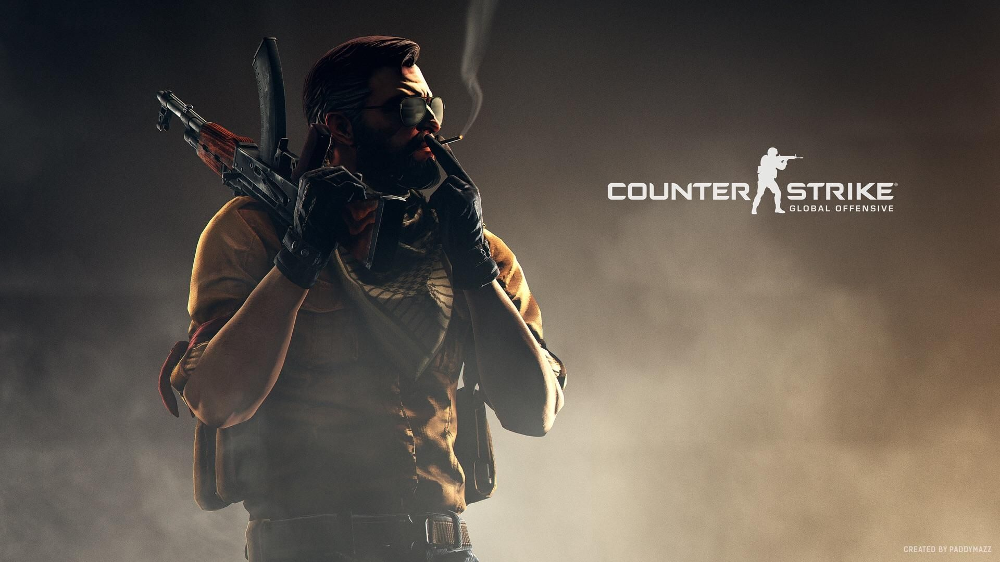

<
Games que marcaram minha vida!
Cabal Online a Revolução da ação
Primeiro jogo que marcou minha vida que joguei pela primeira vez entre 2007 e jogo até hoje!
 Site do Jogo
Site do Jogo
O jogo se passa num mundo chamado Nevareth, que foi destru�do por uma entidade maligna conhecida como Cabal. Dos sobreviventes, seis "mestres" se ergueram, cada um dominando uma das habilidades da forma de poder denominada For�a. Os mestres ensinaram-nas �s pessoas e Nevareth foi reconstru�da. Anos depois, Cabal planeja um retorno ao poder, e os personagens do jogo assumem o papel de her�is que lutam para evitar sua ascens�o.
Point Blank
Segundo Jogo que marcou minha vida que joguei pela primeira vez entre 2010 e ainda jogo as vezes!
 Site do Jogo
Site do Jogo
Point Blank � um jogo que foi criado no ano de 2008. Nele, um grupo de pessoas insatisfeitas com o governo come�aram a fazer passeatas e manifesta��es pac�ficas. Com o tempo o grupo, denominado Rebeldes, ganhou propor��o e uma mentalidade radical, tornando-se fortemente armado e com comportamento terrorista. Eles se re�nem em uma sala para come�ar o combate e quem tiver mais mortes ou rounds vencer� a partida.
League of Legends
Terceiro jogo que marcou joguei pela primeira vez em 2014 e jogo até hoje!
 Site do Jogo
Site do Jogo
Em League of Legends, os jogadores assumem o papel de "invocadores", que controlam campe�es com habilidades �nicas, que formam um time e lutam contra o time advers�rio de outros invocadores ou controlados pelo computador. No modo mais popular do jogo, o objetivo de cada time � destruir o Nexus da equipe advers�ria, uma constru��o localizada na base e protegida por outras estruturas. Cada partida de League of Legends � distinta, pois os campe�es sempre come�am fracos e progridem atrav�s da acumula��o de ouro e da experi�ncia ao longo do jogo.
Counter-Strike Global Offensive
Quarto jogo que marcou joguei pela primeira vez em 2016 e jogo até hoje!

Site do Jogo
Global Offensive foi lan�ado inicialmente com quatro modos de jogo: Casual Cl�ssico, competitivo, demoli��o e corrida armamentista, e v�rios mapas oficiais para cada um dos modos do jogo. O modo de jogo Deathmatch, e outros mapas oficiais, foram adicionados p�s-libera��o. A mec�nica para o cen�rio Hostage (de ref�ns) foram reformadas p�s-liberta��o. Novas armas, como a CZ-75 Auto,R8 REVOLVER e a MP5 SD foram adicionados p�s-lan�amento. As estat�sticas para as armas e o layout dos mapas foram modificados p�s-lan�amento para o equil�brio competitivo.
Battlefield 4
Quinto jogo que marcou joguei pela primeira vez em 2017 e jogo até hoje!
 Site do Jogo
Site do Jogo
A campanha de Battlefield 4 se desenrola em 2020, seis anos ap�s os eventos do seu antecessor. As tens�es entre os Estados Unidos e o Ir�o est�o muito elevadas devido a um conflito que j� dura seis anos. Al�m disso, a China tamb�m est� prestes a entrar em guerra, sobretudo devido aos planos do Almirante Chang de retirar o atual governo chin�s do poder: se for bem sucedido, os russos ter�o total apoio dos chineses, incluindo assim a China na guerra contra os Estados Unidos.